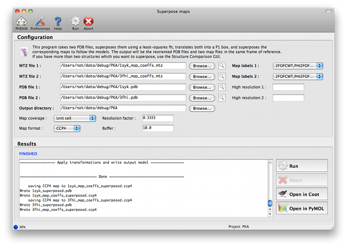
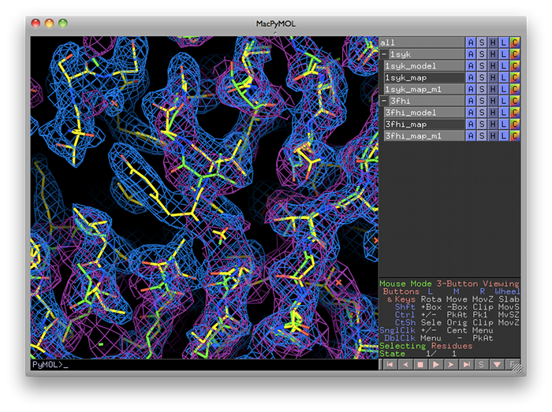

- Pavel Afonine, Nat Echols
phenix.superpose_maps is a utility for transforming two maps to the same frame of reference, allowing direct comparison of molecular features in electron density. The name is slightly misleading, because the program actually performs a superposition of PDB files, then reorients the associated maps to follow them. This is usually done for publication purposes, to compare electron density for the same feature(s) in different crystal forms. The examples shown here are structures of the protein kinase PKA, one in space group P4(2) (PDB ID 1syk), one in space group P2(1)2(1)2(1) (PDB ID 3fhi). (These are included in the PHENIX distribution as part of the "pka-compare" example.)
We recommend running this program from the GUI, and this document covers the GUI version; however, the command-line program should work equally well, and parameters are listed below.
The program can be started from the main GUI by clicking "Superpose maps" in the "Maps" category. A PDB file and an MTZ file containing map coefficients are required for each structure. Map column labels will be extracted automatically and added to the drop-down menus.

The program will create a new directory named "SuperposeMaps_X", where X is the job ID (this applies to the GUI version only). Output is in either CCP4 or XPLOR map format (we recommend CCP4 maps because of the reduced file size). These can be automatically loaded into Coot or PyMOL once the program is finished running.

- Output file names are determined automatically; this will be fixed in a future version.
- Only one chain is used in the molecular superposition at present. The program will try to guess the appropriate pair of chains to use, but you can specify alternate chains if you prefer.
- You may only transform one pair of maps at a time; this limitation will be removed in future versions. In most cases, the same input parameters (except MTZ column labels) should always result in the same frame of reference for the output maps, so the program may be run serially if multiple sets of maps are involved.
- Both input models will be transformed to ensure that all coordinates are positive (placing the new map in a simple P1 box). For the first model, only a translation will be involved.
- There is currently no simple way to recover the initial frames of reference for the input models; however, the structure comparison GUI does include this feature (allowing editing of transformed models in Coot, followed by refinement in the original orientations), although it is limited to a few pre-defined map types.
- Because maps are sampled along a simple grid, reorientation of the map requires re-sampling for the new grid. This requires interpolation of the new grid values, and some accuracy will be lost in the process (partly depending on the orientation of the new grid relative to the original). We have not observed artifacts in the transformed electron density, but the grid point values are not precise, and further interpolation is not advised.
- All symmetry in the original structures is lost. Although the regions of electron density directly adjacent to the molecules will be preserved, there will be a noticeable break where the map file ends.
- Wu J, Yang J, Kannan N, Madhusudan, Xuong NH, Ten Eyck LF, Taylor SS. Crystal structure of the E230Q mutant of cAMP-dependent protein kinase reveals an unexpected apoenzyme conformation and an extended N-terminal A helix. Protein Sci. 2005 14:2871-9. PubMed PMID: 16253959; PDB ID 1syk
- Kim C, Xuong NH, Taylor SS. Crystal structure of a complex between the catalytic and regulatory (RIalpha) subunits of PKA. Science 2005 307:690-6. PubMed PMID: 15692043; PDB ID 3fhi